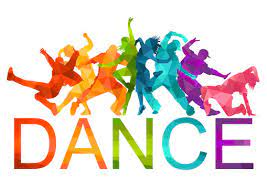
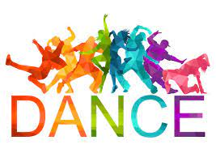

I is a remarkable student at Hamilton High School, known for her academic prowess and dedication to dance. As a 12th grader, i have already distinguished myself by taking on numerous college-level classes, showcasing my commitment to education and my ability to excel in challenging environments. my intellectual curiosity and drive have not only earned me the respect of my teachers and peers but have also set a strong foundation for my future academic endeavors.
In addition to my academic achievements, I am passionate about dance. I am not just a participant but a leader, teaching my own dance team with a level of expertise and enthusiasm that is truly inspiring. Under my guidance, my team has honed their skills and developed a camaraderie that is palpable boh in practice and performance. my leadership has been a pivotal factor in their success.
The dance team,has achieved considerable recognition, competing in numerous state and national championships. Their performances are a testament to our hard work, discipline, and the creative choreography that I bring to the table. The teams accomplishments are a reflection of my ability to inspire and lead, making me a role model for my peers and a valued member of the Hamilton High School community. My talents and leadership in both academics and dance speak volumes about my character and potential.
 
Back to Home

Back to Home